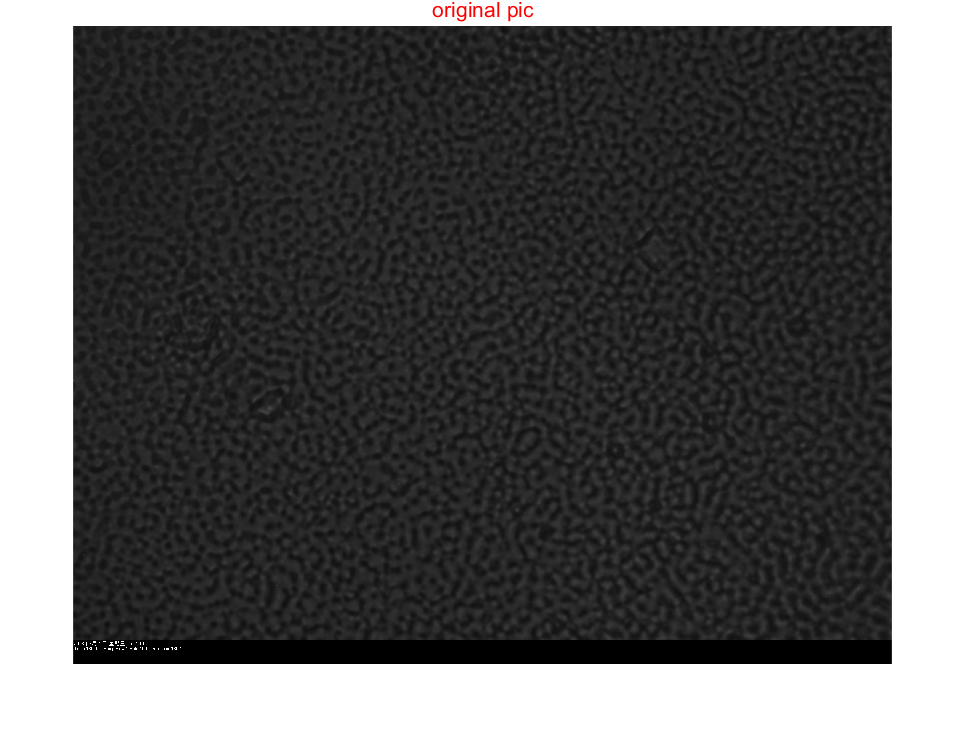
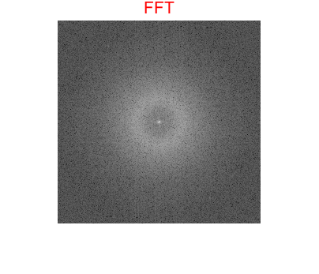
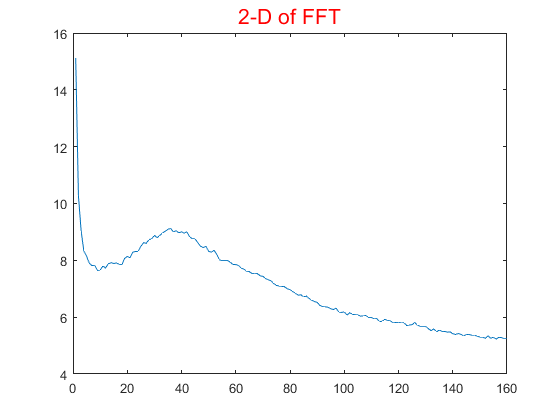

clc
clear
A='old2.5h.jpg';
K = imread(A);
K = rgb2gray(K);
figure;
imshow(K,[]);title('original pic','color','r','FontSize',16)
Kx=K(1:4:1281,1:4:1281);
F=fft2(Kx);
F=fftshift(F);
F=abs(F);
T=log(F+1);
figure;
imshow(T,[]); title('FFT','color','r','FontSize',16)
B=['D:\Users\zhang haimo\Documents\MATLAB\FFT\FFT',A];
saveas(gcf,B)
Intensity=zeros((length(F)-1)/2,1);
for n=1:(length(F)-1)/2
a=0;
for i=1:length(F)
for j=1:length(F)
if ((n-1)<=( ( (i-(length(F)+1)/2)^2+(j-(length(F)+1)/2)^2 )^0.5 ) )&&( ( ( (i-(length(F)+1)/2)^2+(j-(length(F)+1)/2)^2 )^0.5 ))<n
Intensity(n)= Intensity(n)+T(i,j);
a=a+1;
end
end
end
if a~=0
Intensity(n)=Intensity(n)/a;
end
end
pix=(1:(length(F)-1)/2)';
figure;
plot(pix,Intensity);title('2-D of FFT','color','r','FontSize',16)
警告: 图像太大，无法在屏幕上显示；将以 50% 显示
  